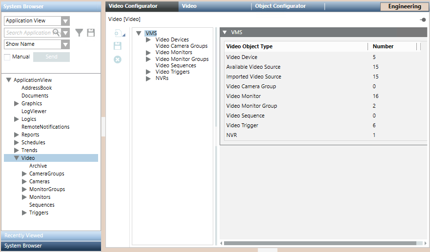
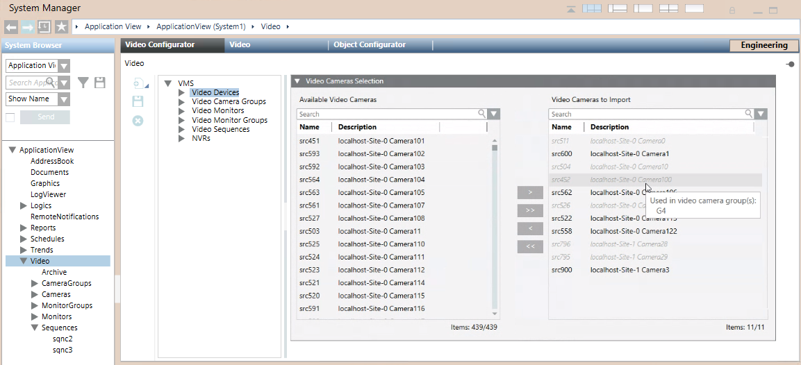
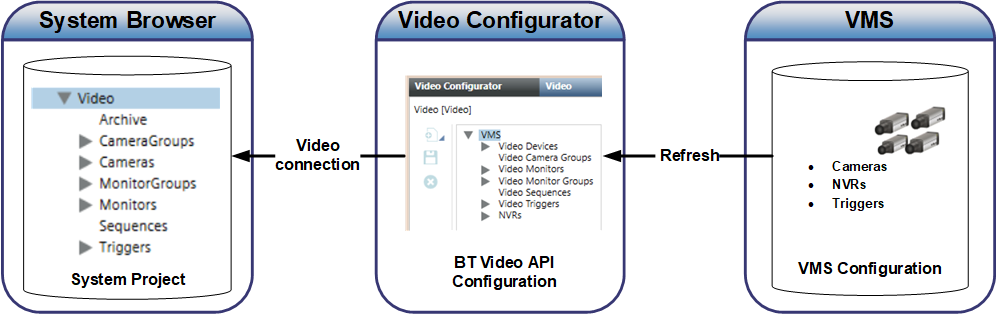

Video Configurator Reference
In Engineering mode, when you select Applications > Video, the Video Configurator tab lets you create, save or remove video objects. The tab has a VMS tree on the left where you can define the physical and logical video objects. The objects acquired or configured here then propagate to the System Browser tree when the video system is connected.

Video Objects Acquired from the Video Management System (VMS)
The following elements in the VMS tree are not configured locally in the Video Configurator tab, because they are instead acquired from the VMS. For instructions on how to configure these, for the Milestone or Siveillance VMS, see Milestone / Siveillance VMS Procedures.
- Video Devices. Cameras and encoders are acquired from the VMS configuration. They are represented as video devices and video sources in the VMS tree. Each video device node can have one or more video source nodes under it. Single cameras are mapped to a device node with one source sub-node. Encoders may be mapped to single devices with multiple source nodes, or to multiple devices, depending on the characteristics of the encoder model.
The following read-only properties are displayed for cameras, in the video source node: - Name (assigned in the Desigo CC)
- Description (acquired from the VMS)
- Enabled: check box indicating whether the camera is enabled or disabled in the VMS. For more information see Disabled and Excluded Cameras, below.
- PTZ: check box selected in case of PTZ camera.
- NVRs. Network Video Recorders (NVR), or recording servers, are acquired from the VMS configuration. A view of the configured servers is presented here in the read-only NVR expander.
- Triggers. Triggers for executing actions on the connected VMS are acquired from the VMS configuration. This allows them to be activated from within Desigo CC .

The above video objects are automatically acquired from the VMS into Video Configurator the first time you connect the video system. Subsequent configuration changes in the VMS require a manual Refresh command to be acquired. See Configuration Alignment, below.
Video Objects Configured locally in Video Configurator
The remaining elements of the VMS tree are configured locally in the Video Configurator tab:
Video Camera Groups: See Configuring Video Camera Groups.
Monitors and Monitor Groups: See Configuring Monitor Groups.
Video Sequences: See Configuring Video Sequences.
When you add video objects in the VMS tree, the name is automatically assigned, and you must enter a mandatory description that identifies the object in both the VMS tree and System Browser.
The following characters are not allowed in the Description text: “.” (dot), “:” (colon), “?” (question mark), “*” (asterisk).
These video objects must be created in the Video Configurator tab, and from there they propagate to System Browser when the Video System is connected.
Any subsequent configuration changes made to these video objects in the Object Configurator (for example, entering a change to an object description ) will be persistent only if the Override protection flag is set.
Disabled and Excluded Cameras
Inside the Video Configurator tab:
- The VMS > Video Devices tree lists all the cameras of the connected VMS, including ones that are disabled. By default, all the enabled cameras will propagate to Applications > Video > Cameras > in System Browser, while any disabled ones are excluded.
- A Video Cameras Selection expander on the right lets you manually adjust which cameras to include/exclude in the Desigo CC configuration. Any cameras removed from the Video Cameras to import list will be removed from System Browser. For detailed instructions see Excluding Cameras from the Project.

Video Configurator Toolbar
A vertical toolbar is provided on the left side of the Video Configurator tab. The following tables describe the command icons in the toolbar.
Engineering Mode Icons | ||
Icon | Name | Description |
| New | Create a new video object. When clicked, this icon opens a submenu where you can select the object type. |
| Save | Save the configuration of the currently selected object. |
| Delete | Remove the current object and delete its entire configuration. |


Editing Icons (Video Camera Only) | ||
Icon | Name | Description |
| Edit | Enter Edit mode to configure video camera associations. |
| Save | Save the associations of the currently edited video camera. |
| Operate | Quit Edit mode (toggle to Operate mode). |


Video Components
The video functionality is provided by three interoperating components:
- A separate Video Management System (VMS) which controls the video devices and manages the source storage of the camera configuration.
- The BT Video API, which acts as an interface to the VMS and supports video configuration in the following ways:
- Acquisition of camera information from the VMS and alignment of the camera list in the Video Configurator tab.
- Selection of which cameras should be imported into System Browser.
- Support for camera group, monitor, monitor group, and sequence configuration, which you manually perform in the Video Configurator tab.
- The management platform connects to the BT Video API to get video images and the configuration information of the Video Configurator tab (which is then used to populate the System Browser tree).
NOTE: After a major configuration change, for example a restore, the connection is not automatic and you must explicitly execute it. See Connecting the Video System.

Configuration Alignment and Refresh
- Configuration changes made in the VMS (cameras, triggers, and NVRs) propagate to Video Configurator upon execution of a Refresh command. From Video Configurator, the changes propagate to System Browser when the Video System is
Connected. - Configuration changes made in Video Configurator (monitor groups, sequences, camera groups and exclusion/inclusion of cameras from the project) propagate to System Browser when the Video System is
Connected..